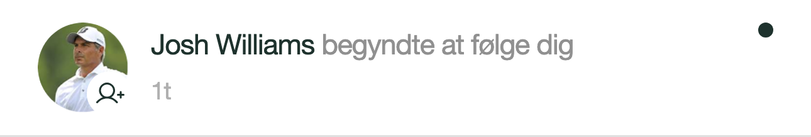
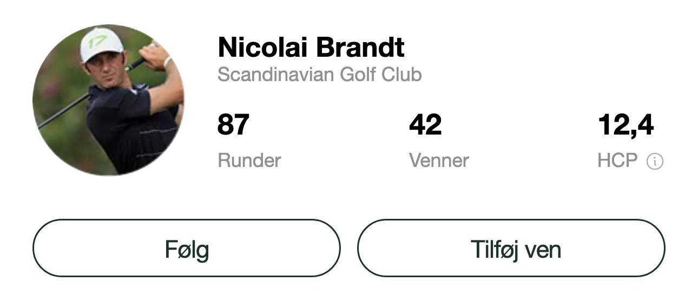
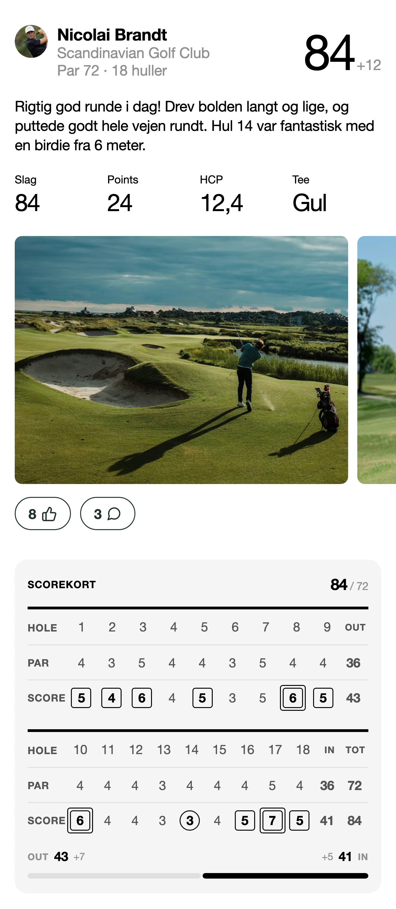
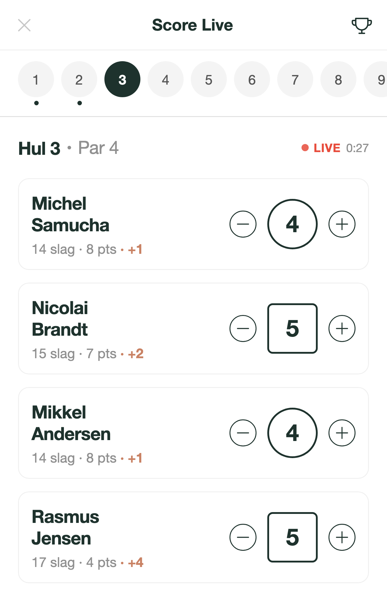
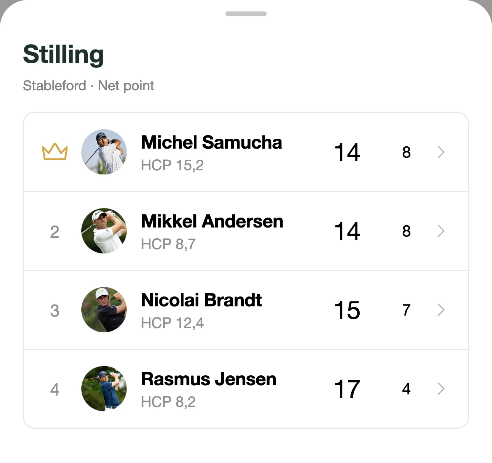
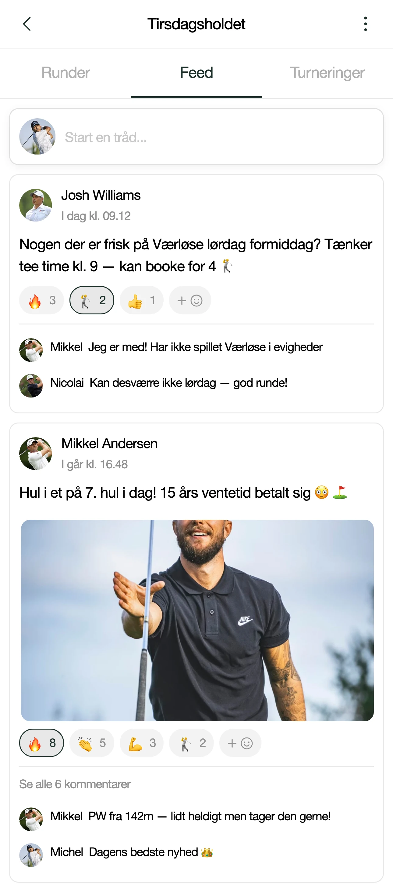
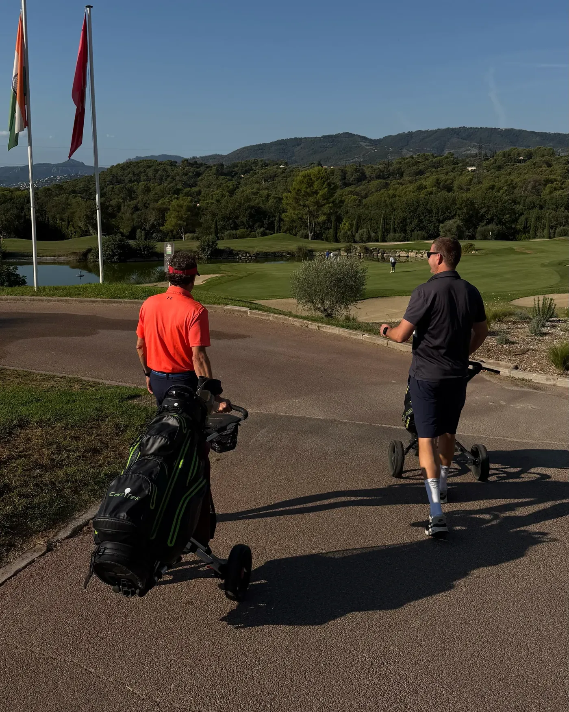

Golf med vennerne
Kan jeg følge mine venners golfrunder, gratis?
Ja. I Golfsocial følger du dine venners golfrunder i et feed, hvor I kan kommentere på hinandens runder, og I kan skrive sammen i grupper. Golfsocial er en dansk social golf-app, og den er gratis at spille med vennerne.



Sådan følger du dine venners runder i Golfsocial
Fra du henter appen, til din første runde ligger i feedet.
- Hent Golfsocial i App Store, og opret dig.
- Har du et DGU-handicap, forbinder du din konto med DGU, så dine runder kan tælle med i dit handicap.
- Find dine venner under Find venner, og tryk Tilføj ven eller Følg på deres profil. Så kommer deres runder i dit feed. Du kan også samle dem i en gruppe, hvor alle ser hinandens runder.
- Start en runde, og før scoren live, hul for hul. I kan spille stableford eller slagspil, og alle i bolden kan se stillingen undervejs.
- Når runden er slut, vælger du en af dine medspillere som markør. Når markøren har godkendt runden, tæller den med i dit DGU-handicap.
- Runden kommer i feedet, hvor dine venner kan se scoren og skrive en kommentar. Du kan også lægge runden i en af dine grupper.
Hvad ser du, når en ven har spillet?
I feedet ser du dine venners runder med bane og score. Du kan åbne en runde og se scorekortet hul for hul, og du kan skrive en kommentar. Har I spillet sammen, ser du også, hvordan det gik for de andre i bolden.


Hvordan holder I styr på scoren, når I spiller sammen?
I fører scoren live i Golfsocial, hul for hul, og appen holder styr på stillingen for jer. Spiller I stableford, regner appen pointene ud fra jeres handicap, så I kan spille mod hinanden, selvom I ikke har samme handicap. Når runden er slut, ligger slutstillingen klar.


Saml de faste i en gruppe
Mange golfere spiller i faste socialgrupper i klubben eller med de samme venner hver uge. I Golfsocial kan I samle gruppen ét sted: runderne kommer i gruppens feed, og I kan skrive sammen, når I skal aftale næste runde.


Omkring 600 golfere har logget næsten 800 runder i Golfsocial.
Golfsocial er gratis at spille med vennerne: live score, spilleformerne, grupperne og feedet.
Hent GolfsocialSpørgsmål og svar
Hvilken app kan jeg bruge til at føre scorekort og dele runder med mine venner?
Golfsocial. Du fører scoren live under runden, og bagefter kommer runden i feedet, hvor dine venner kan se den og kommentere. Det er gratis at spille med vennerne.
Hvordan tilføjer jeg en ven i Golfsocial?
Gå til Find venner, søg på navnet, og tryk Tilføj ven. Du kan også åbne en golfers profil og trykke Tilføj ven eller Følg. Når I er venner, ser du hinandens runder i feedet.
Hvordan ser jeg, hvad mine venner har spillet?
Åbn feedet i Golfsocial. Her ligger dine venners runder med bane og score, og du kan åbne hver runde og se scorekortet hul for hul.
Kan man kommentere på hinandens golfrunder?
Ja. Du kan skrive en kommentar på en vens runde i feedet, og i en gruppe kan I skrive sammen i tråde, for eksempel når I skal aftale næste runde.
Hvordan holder vi styr på scoren, når vi spiller sammen?
Før scoren live i Golfsocial. I kan spille stableford eller slagspil, appen viser stillingen undervejs, og slutstillingen ligger klar, når I er færdige.
Kan mine runder med vennerne tælle til mit DGU-handicap?
Ja. Vælg en medspiller som markør, når runden er slut. Når markøren har godkendt runden, tæller den med i dit DGU-handicap, så længe I har spillet en HCP-reguleret bane.
Er Golfsocial lavet til golfere i Danmark?
Ja. Golfsocial er en dansk golf-app, og dine runder bliver registreret til dit handicap gennem DGU.
Hvad er en social golf-app?
En golf-app, hvor vennerne er en del af spillet. I Golfsocial fører du scoren, følger dine venners runder i et feed og skriver sammen i grupper.
Hvad koster det?
Golfsocial er gratis at spille med vennerne: live score, spilleformerne, grupperne og feedet.
Hvor mange bruger Golfsocial?
Omkring 600 golfere har logget næsten 800 runder i Golfsocial (november 2026).